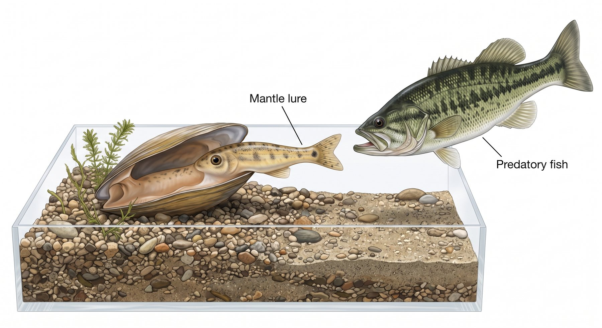

6.2 The Four Factors of Natural Selection
Chapter 6.1 established that populations share ancestors. This chapter is about the mechanism — the ordinary, unavoidable process that makes populations change. Once you can see the four factors working together, evolution stops being a claim you accept and becomes something you can predict.
By the end of this chapter you should be able to
- Identify the four factors that drive evolution, and explain why all four are needed.
- Use the VIDA framework to explain a specific case of natural selection.
- Explain the cause-and-effect relationship between genetic variation, differential survival and reproduction, and change in a population.
- Say precisely what is random in natural selection and what is not.
- Compare natural and artificial selection.
- Define and use: artificial selection, adaptation, competition, selection pressure, antibiotic resistance.
Where we have got to
In 6.1 you built a case that species share ancestors. Five independent kinds of evidence — fossils, anatomy, embryos, molecules and geography — all pointed at the same family tree.
But that only tells you that populations changed. It says nothing about how. A family tree is a description, not an explanation, and a description that nobody can explain is not much use in science.
So this chapter answers the obvious next question: what actually makes a population change over generations? The answer is a process ordinary enough that once you see it, you will start noticing it everywhere.
Two things you already have will do most of the work here.
From Unit 5: where variation comes from. Mutation changes DNA, and meiosis and fertilisation shuffle alleles into new combinations, so offspring are never identical to their parents or to each other.
From Unit 3: competition for limited resources. An environment can only support so many individuals — you met this as carrying capacity.
Put those two facts side by side and natural selection is almost unavoidable. That is the argument of this chapter.
The four factors
The standard for this chapter names four factors. The exact wording matters, so read it slowly. Evolution results from:
- The potential for a species to increase in number. Organisms produce far more offspring than can possibly survive. A single cod lays millions of eggs; a dandelion releases thousands of seeds. If all survived, the world would fill in a season.
- Heritable genetic variation between individuals, arising from mutation and from the reshuffling that happens in sexual reproduction.
- Competition for limited resources. Because more are born than can survive, food, water, light, space and mates run short.
- The proliferation of those organisms better able to survive and reproduce in that environment.
The four factors are not a list to memorise — they are a chain of cause and effect. Overproduction makes competition inevitable. Competition means some variants do better than others. Because that variation is heritable, the successful variants are more common in the next generation. Change over generations is not an extra step you have to add; it is what the first three factors force to happen.
Why all four are needed
Remove any one and the process stalls. It is worth testing this yourself:
| Remove… | What happens |
|---|---|
| Overproduction | Every individual survives. Nothing is filtered, so nothing changes. |
| Variation | Individuals are identical. The environment cannot favour one over another. |
| Heritability | Successful individuals cannot pass on what made them successful. The change dies with them. |
| Differential survival and reproduction | Survival is unrelated to traits. Allele frequencies drift, but no adaptation results. |
Note the third row. This is why heritability is doing so much work in the standard's phrase "heritable genetic variation". A weightlifter's muscles and a bonsai tree's shape are real variation, but they are not heritable, so natural selection cannot act on them. Only variation written into the genome is passed on.
Try the test on a real case. In this HHMI BioInteractive film, the biologist Hopi Hoekstra studies rock pocket mice in the American desert: light mice on pale sand, dark mice on black lava flows. As you watch, find all four factors — where the variation comes from, why it is heritable, and what does the selecting.
VIDA — a way to organise an explanation
The four factors describe the process. VIDA is the shorthand this course uses to write that process for a specific case, in order:
| Step | The question it answers | |
|---|---|---|
| V | Variation | What differences already existed between individuals in this population? |
| I | Inheritance | Is that difference heritable — can it be passed to offspring? |
| D | Differential survival and reproduction | Given the selection pressure, which individuals left more offspring, and why? |
| A | Adaptation | How did the population change over generations as a result? |
![The VIDA cycle in four panels, running clockwise. Variation: a one-humped Dromedary and a two-humped Bactrian stand together, showing differences in hump number and coat thickness already present. Inheritance: each type produces calves of its own kind, so the traits are passed on. Differential survival and reproduction: the climate turns arid, and the thick-coated two-humped Bactrian is marked with a green thumbs-up while the one-humped Dromedary is crossed out. Adaptation: the herd is now mostly two-humped Bactrians, with a Dromedary or two still among them.](../images/u6/image64.jpeg)
A first example — the bunnies
Try this before you read the paragraph below it. Four scenes describe one population of rabbits. Give each scene the VIDA step it shows.
Match each step to what is happening
InteractiveWork this one through in order before you try a harder case. A population of rabbits varies in fur colour (V). Colour is genetic, so it is passed to offspring (I). Against a particular background, one colour is harder for predators to spot, so those rabbits survive to breed more often (D). Over generations that colour becomes the common one — the population is now camouflaged (A).
Nothing in that account describes a rabbit changing colour. Every sentence is about proportions in the population. If you can keep that discipline on the bunnies, you can keep it on any example.
The order matters more than the letters. Variation comes first, before the selection pressure ever arrives. Almost every weak evolution answer gets this backwards — describing the pressure appearing and the organisms then responding to it. VIDA forces the correct order onto your explanation.
What is random, and what is not
People who reject evolution often say it claims complex organisms arose "by random chance". People who accept it sometimes describe it as entirely random too. Both are wrong, and the confusion comes from the process having a random half and a non-random half.
Mutation is random. Selection is not. That single sentence resolves the argument, and it is worth being able to say exactly what each half means.
The random part
Mutations occur without regard to whether they would be useful. A bacterium in an antibiotic does not generate resistance mutations because it needs them. Mutations happen at a low, steady rate regardless — most are neutral, many are harmful, a few happen to help.
Which individuals a random event strikes is also unpredictable: a tree falling on the fittest deer in the herd kills it just as dead.
The non-random part
What survives is definitely not random. In a drought, birds with deeper beaks that can crack hard seeds survive at a higher rate — reliably, repeatably, and in a direction you can predict from the environment. The environment acts as a consistent filter on variation that arrived randomly.
An analogy that holds up: shuffling a deck is random, but a rule that discards every card below a seven is not. Run both together for long enough and you end up with a hand full of high cards — an outcome that looks designed, produced by a random process and a consistent filter. Neither half alone would do it.
Worked example — antibiotic resistance
Bacteria that were once easily killed by an antibiotic can, over time, become untreatable by it. This is natural selection running fast enough for us to watch, and it is the example the standard's "past and present evidence" is most often assessed on.
The same explanation, written as VIDA
| Antibiotic-resistant bacteria | |
|---|---|
| V | Within a large bacterial population, random mutation has already produced a few cells with an allele giving resistance — for example an altered protein the antibiotic can no longer bind, or a pump that expels it. |
| I | That allele is in the bacterial genome, so it passes to every daughter cell when the bacterium divides. (Bacteria can also transfer resistance genes horizontally, which spreads it faster still.) |
| D | The antibiotic is the selection pressure. Susceptible cells die; resistant cells survive and keep dividing. Their survival rate is dramatically higher — not slightly. |
| A | After a few generations almost every cell in the population descends from a resistant survivor. The population is now resistant, and the antibiotic no longer works. |
Three phrasings to avoid, each of which reverses the causation:
"The bacteria became resistant because of the antibiotic." Individual bacteria did not become anything. The resistant ones were already there.
"The bacteria mutated to survive." Mutation is not a response to need.
"The bacteria built up immunity." Immunity is what your immune system does. This is a change in the composition of a population.
This explains the instruction on every antibiotic packet to finish the course even once you feel better. Work out why, using the figure: if you stop early, which cells are the ones most likely still alive — and what happens next?
Is this evolution? Yes, and it is worth being able to defend that. Evolution is a change in the heritable characteristics of a population over generations. The allele frequency for resistance has gone from very low to near-universal, and that change is inherited. It meets the definition exactly — it is simply happening on a timescale we can observe, because bacteria divide every twenty minutes.
Natural and artificial selection
Artificial selection is selective breeding: humans decide which individuals reproduce. Every breed of dog, every variety of maize, and the broccoli, cabbage, kale, cauliflower and Brussels sprout all bred from a single wild mustard species are its products.
Darwin opened On the Origin of Species with artificial selection deliberately. His readers already accepted that breeders could reshape a species within a few generations. His argument was that nature does the same thing, with a different agent doing the choosing.
| Natural selection | Artificial selection | |
|---|---|---|
| Source of variation | Random mutation and sexual reshuffling | Random mutation and sexual reshuffling — identical |
| Who selects | The environment — predators, climate, disease, competition | Humans |
| Trait favoured | Whatever raises survival and reproduction in that environment | Whatever humans want, even if harmful to the organism |
| Speed | Usually slower; pressure varies | Usually faster; pressure is intense and consistent |
| Mechanism | The same — differential reproduction of heritable variation | |
Artificial selection can push traits that natural selection never would. Bulldogs have been bred for a skull shape that leaves many unable to breathe comfortably or give birth unassisted. In the wild those traits would be selected against immediately. They persist because humans, not the environment, are doing the choosing — which is precisely the difference between the two.
Worked example — the Lampsilis mussel's lure
Freshwater Lampsilis mussels have a problem. Their larvae must attach to the gills of a passing fish to develop, and a mussel cannot chase a fish.
The solution looks impossible. Part of the female's mantle is shaped and coloured like a small fish — complete with what appears to be an eyespot and a tail — and she waves it in the current. A predatory bass strikes at the "minnow", and the mussel releases her larvae directly into its gills.

Before reading on: this is the kind of example that makes people reach for design. Try writing the VIDA explanation yourself first. The hard part is the V — what could the earliest version of this lure possibly have been?
| Lampsilis mantle lure | |
|---|---|
| V | Ancestral mussels varied in mantle shape, colour and movement. Some, by chance, were marginally more fish-like or twitched in a way that drew slightly more attention. No individual needed to resemble a minnow — only to be a little more noticeable than its neighbours. |
| I | Mantle shape, pigmentation and the behaviour of waving it are genetically determined and heritable. |
| D | The selection pressure is the need to reach a host fish. Females whose mantle attracted a fish got their larvae onto gills; those that did not attract one left no surviving offspring at all. The difference in reproductive success is close to total. |
| A | Over many generations the tiny advantages accumulated. Each small increase in resemblance was favoured, and the result is a lure detailed enough to fool a predator that hunts fish for a living. |
The general move here works for any "how could that possibly evolve" example. You do not need the first version to have worked well — only to have worked slightly better than the alternative. A 3% better chance of attracting a fish, compounded across thousands of generations, is enough. Selection accumulates small advantages; it does not require leaps.
Where this leaves us
You now have both halves of the argument. 6.1 showed that populations changed; this chapter showed the process that changes them.
And notice that the process needed nothing exotic. Organisms have more offspring than can survive. Those offspring differ. Some of those differences are inherited. That is all — the rest follows on its own, whether anyone intends it or not.
There is a fair objection to everything you have just read: it is a story. A convincing one, but still an argument made in words, about things that mostly happened before anyone was watching.
A scientist would want measurements. 6.3 provides them — six real studies, with real data, where you can watch the distribution of a trait shift and check whether it moved the way this chapter predicts.
Check your understanding
Two parts. The quick check marks itself and points you back to anything shaky. The written questions after it are the harder practice, because explaining in your own words is what the summatives ask for.
Quick check
Which of these is not one of the four factors the standard names?
The first, second and fourth are three of the four factors — the missing one is competition for limited resources. The third is the Lamarckian error, and it is the most common way an evolution answer goes wrong.
Every dandelion in a meadow releases thousands of seeds, and the plants differ in root depth — but in this species root depth is set entirely by the soil a seedling lands in, not by its genes. Which factor is missing?
Variation and heritable variation are not the same factor. A weightlifter's muscles, a bonsai's shape and a root system shaped by soil are all real differences, but none of them is written into the genome, so selection has nothing to accumulate.
In a VIDA explanation, what must come first?
Variation comes first, before the pressure ever arrives. Getting this order wrong turns a correct explanation into a Lamarckian one, which is exactly why VIDA is written in that sequence.
A student explains the camels: "The climate turned arid, so the camels grew thicker coats and a second hump, and passed those on." Which VIDA step has gone wrong?
Figure 6.11 starts with both camel types already standing side by side, before the climate shifts. That ordering is the whole point of the diagram: the arid conditions chose between camels that already differed, and no individual camel ever grew a second hump.
What is wrong with saying evolution is completely random?
Randomness supplies the raw material; selection does the shaping. The environment favours particular variants reliably and in a direction you can predict from the conditions.
A drought hits, hard seeds are all that is left, and birds with deeper beaks survive at a higher rate. Which part of this is the random part?
The deck-shuffling analogy maps straight onto this: the deal is blind, the rule that discards low cards is not. Both halves are needed, and naming which is which is what separates a careful answer from "it all happened by chance".
A bacterial population becomes resistant to an antibiotic. What actually happened?
The resistance allele arose by chance before the antibiotic arrived. The antibiotic selected for it rather than creating it — which is why finishing a prescribed course matters.
You feel better after four days and stop the antibiotic early. Why does the packet tell you to finish the course?
Stopping early is the second panel of Figure 6.12 without the rest of the sequence. You have applied just enough selection pressure to clear the easy cases and leave the resistant ones a population's worth of empty space to grow into.
What is the difference between natural and artificial selection?
The mechanism is identical — differential reproduction of heritable variation. Darwin opened his book with pigeon breeding for exactly this reason.
Bulldogs have been bred to a skull shape that leaves many of them unable to breathe comfortably or give birth unassisted. What does this show?
Which traits are favoured is decided by whoever holds the filter. Change the agent and you change the direction of travel, while the machinery underneath — heritable variation, differential reproduction — carries on unchanged.
Explain it yourself
Write your answer before opening the response. Comparing what you wrote with a full answer is where most of the learning happens.
A student writes: "The bacteria were exposed to the antibiotic, so they mutated to become resistant." Identify the error and rewrite the sentence correctly.
The error is the direction of causation. The sentence has the antibiotic causing the mutation, as though the bacteria responded to a threat. Mutation is random with respect to need — the resistance allele arose by chance before the antibiotic was ever present.
A correct version: "The bacterial population already contained a few individuals with a resistance allele from random mutation. When the antibiotic was applied it killed the susceptible bacteria, so only the resistant ones survived and reproduced. Over several generations the proportion of resistant bacteria in the population increased."
Note what changed: the variation now comes first, the antibiotic selects rather than creates, and the thing that changes is the population, not any individual.
Imagine a population in which every individual is genetically identical, but which still overproduces offspring and competes intensely for food. Will it evolve by natural selection? Explain.
No. Overproduction and competition are present, so many individuals will die — but with no heritable variation, which ones die is unrelated to any inherited trait. There is nothing for the environment to favour, and nothing different to pass on.
This is why variation is a distinct factor rather than a detail. Selection is a filter, and a filter needs something to distinguish between. The population might still change in size dramatically, but it will not adapt.
Worth adding: such a population is also extremely vulnerable. Faced with a new disease, either every individual resists or none does — which is exactly the danger of genetically uniform crop monocultures.
"Evolution is a random process." Evaluate this statement.
It is half right, and the half it gets wrong is the important one.
Random: the origin of variation. Mutations occur without regard to whether they will be useful, and sexual reproduction shuffles alleles unpredictably. Chance events also kill individuals regardless of how well suited they are.
Not random: which variants increase. Survival and reproduction depend systematically on how well a trait suits the environment, and the direction of change is predictable from the selection pressure — which is why a drought reliably favours deeper beaks and an antibiotic reliably favours resistance.
Calling the whole process random misses that natural selection is the non-random part. Randomness supplies the raw material; selection does the shaping.
Why did Darwin open his book with pigeon breeding rather than with wild species?
Because it was common ground. His readers already knew that breeders could reshape pigeons, dogs and cattle within a few generations by choosing which individuals bred — nobody disputed it. That gave him an agreed-upon example of heritable variation being filtered to produce large change.
His argument was then a single step: the mechanism is the same in nature, with the environment doing the choosing instead of a breeder. Rather than asking readers to accept a new process, he asked them to accept that a familiar one operates without a human present.